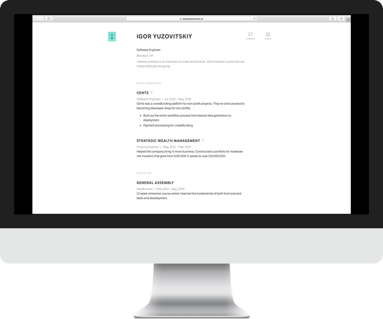
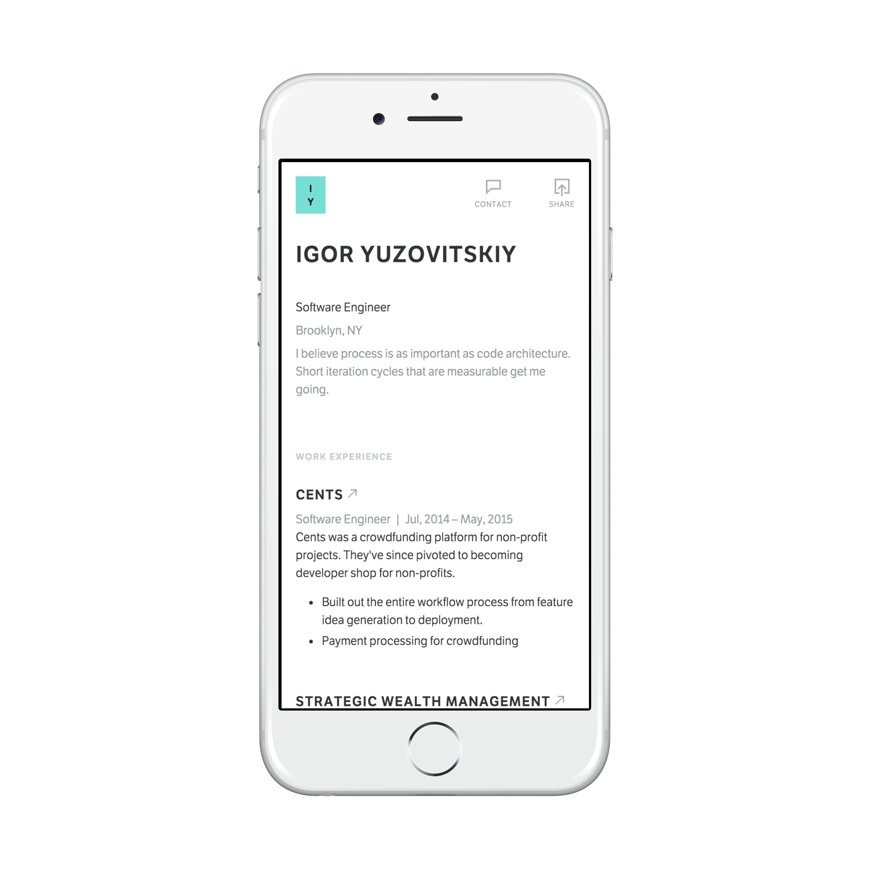
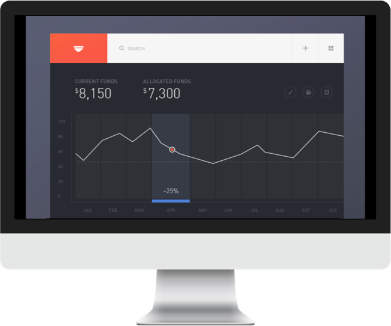
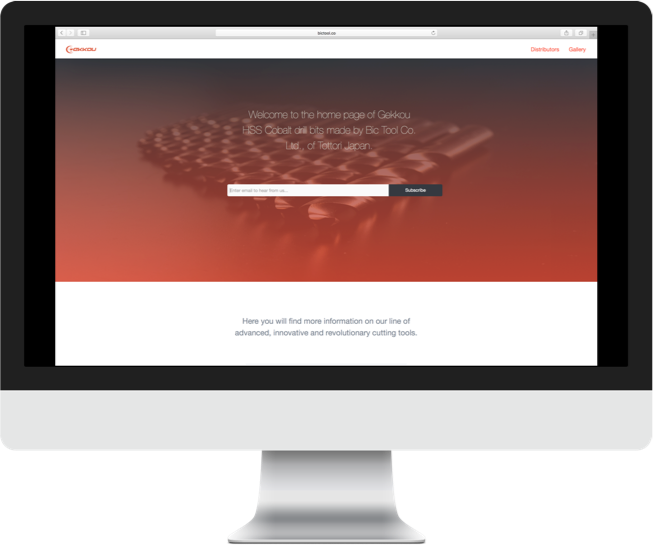
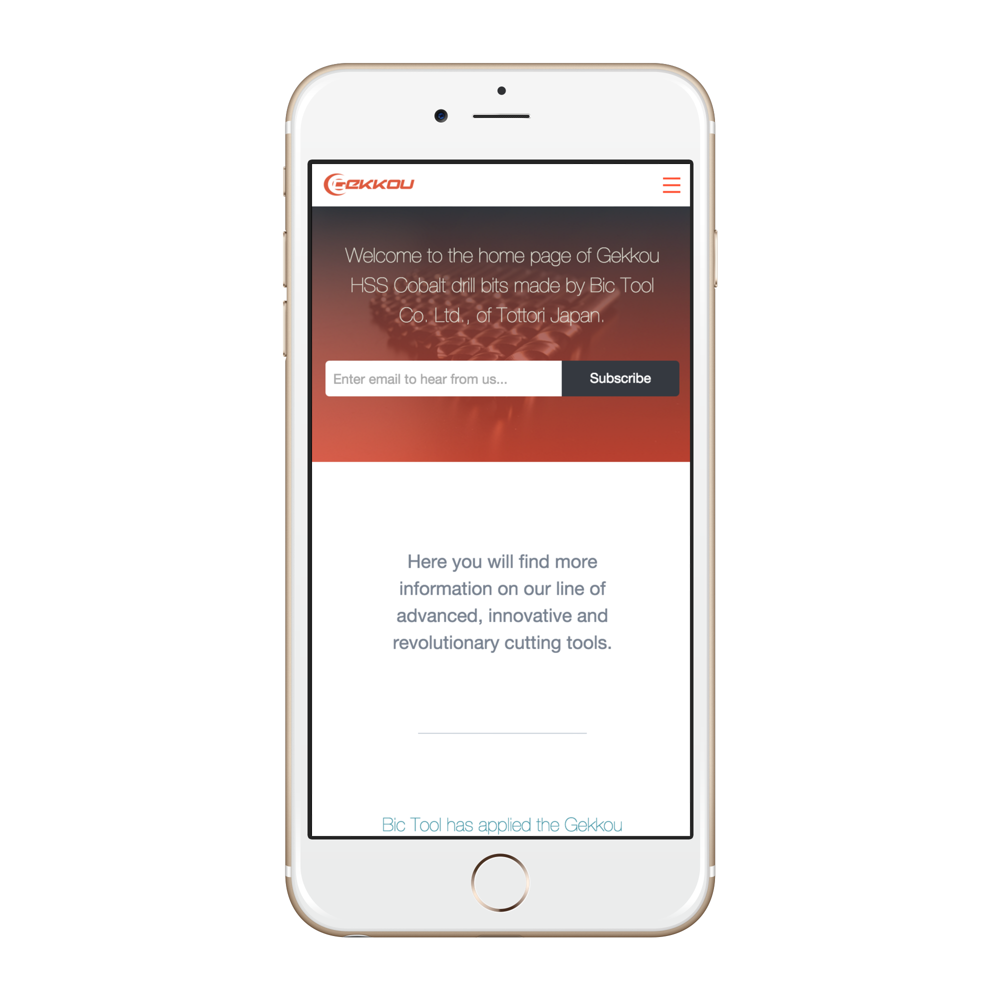
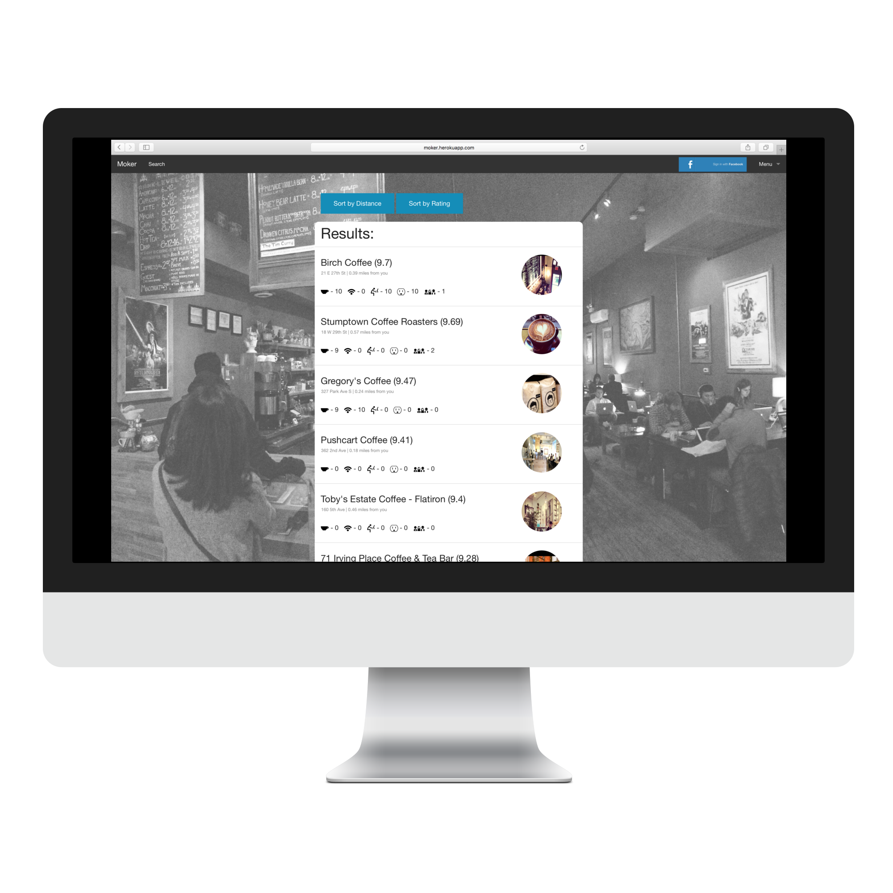
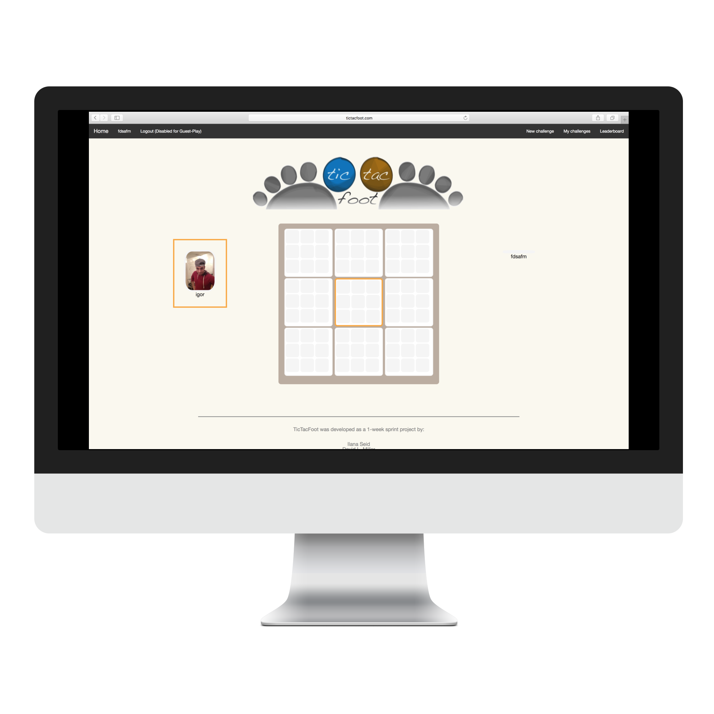

There's more to software engineering than software engineering. I'm product focused and understand the startup landscape. There's more to software engineering than software engineering. I'm product focused and understand the startup landscape.


Resume
Responsive Credentials
Sick of squinting while zooming in and out of a pdf resume that you're attempting to view on your mobile device? Take a look at my reponsive consicous resume.
Check it

WealthBoost
Performance and Databases
WealthBoost helps regular investors see the inordinate fees they are paying within their financial portfolios. The propriatary algorithm takes in the inputs provided by the user and cross checks millions of entries in the database and returns the best in class recommendation.
Check it


Gekkou
Website Resposive Design
BicTools is a Tottori, Japan based company expanding into the United States and Canada that needed a contemporary design focused website. Simplicity and responsive mobile design were central.
Check it

Moker
Personal Project
Moker helps developers find coffee shops conducive to work. That includes ratings on outlets, space, wifi, and coffee quality. You can also find other developers working at your coffee shop for collaboration.
Check it

TicTac-Foot
Personal Project
A supercharged version of tic tac toe, tic-tac foot adds a new level of complexity that makes the game fun and exciting again.
Check it
I'm looking for a job and cool freelance projects :)